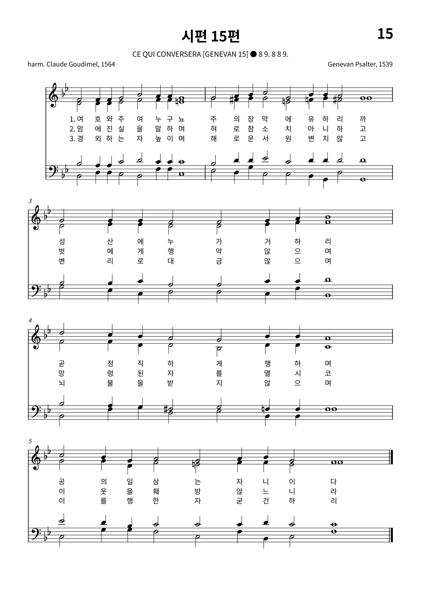

Psalm 15
CE QUI CONVERSERA [GENEVAN 15] · 8 9. 8 8 9.
English title: LORD, Who Shall Sojourn in Thy Tent
Tune: Genevan Psalter, 1539 · Harmony: Claude Goudimel, 1564 · Lyrics: Korean adaptation of Psalm 15 from the Korean Revised Version (AI draft adaptation · not yet theologically reviewed) · 3 stanzas
Score PDF MusicXML (for printing) MusicXML (for accompaniment, with prelude and repeats) Read Psalm 15 (Korean Revised Version)
Score
← Psalm 14 ListAccompaniment (in preparation)Psalm 16 →
Lyrics (Korean)
Stanza 1 (Ps. 1~2절 앞)
여호와 주여 누구뇨
주의 장막에 유하리까
성산에 누가 거하리
곧 정직하게 행하며
공의 일삼는 자니이다
여호와 주여 누구뇨
주의 장막에 유하리까
성산에 누가 거하리
곧 정직하게 행하며
공의 일삼는 자니이다
Stanza 2 (Ps. 2절 뒤~4절 앞)
맘에 진실을 말하며
혀로 참소치 아니하고
벗에게 행악 않으며
망령된 자를 멸시코
이웃을 훼방 않느니라
맘에 진실을 말하며
혀로 참소치 아니하고
벗에게 행악 않으며
망령된 자를 멸시코
이웃을 훼방 않느니라
Stanza 3 (Ps. 4절 뒤~5절)
경외하는 자 높이며
해로운 서원 변치 않고
변리로 대금 않으며
뇌물을 받지 않으며
이를 행한 자 굳건하리
경외하는 자 높이며
해로운 서원 변치 않고
변리로 대금 않으며
뇌물을 받지 않으며
이를 행한 자 굳건하리